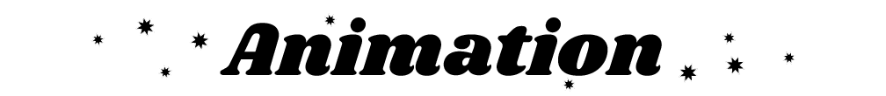
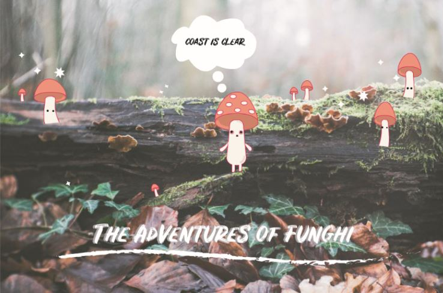

Home |
Raster |
Vector |
Time Based Media |
About |
Contact

I learned the basics of animation using Adobe Animate!
During our Time Based Media unit, I learned a completely new set of skills which enabled me to use my vector creature "Funghi", and bring him to life! I accomplished this by applying alpha effects, as well as motion and shape tweens.